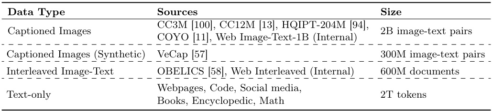
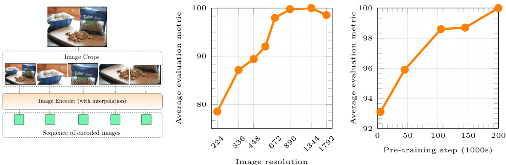
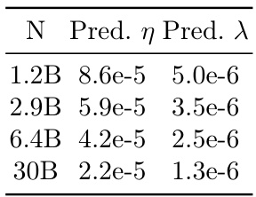
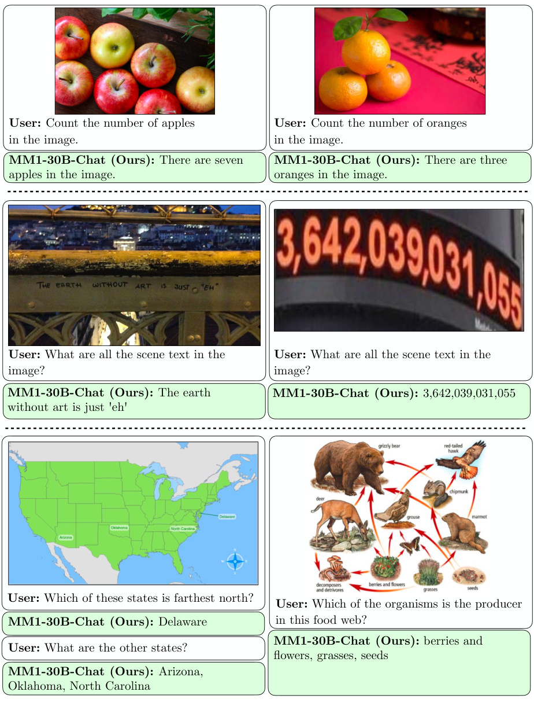

None
このセクションの目的と概要
この「はじめに」のセクションでは、本論文の研究背景、特に大規模言語モデル (LLM) と視覚基盤モデル (Vision Foundation Models) の最近の目覚ましい進展について触れます。そして、これらの技術を融合させたマルチモーダル大規模言語モデル (MLLM) が新たなフロンティアとして登場している現状を説明します。 しかし、既存のMLLM研究には透明性の課題があり、特にモデル設計の選択プロセスに関する情報が不足しています。 本論文「MM1」は、この課題に対処するため、高性能なMLLMを構築するための設計原則や教訓を明らかにすることを目的とし、そのためのアプローチと主な貢献を概説します。
ここ数年で、AI研究コミュニティは言語モデリングと画像理解の分野で目覚ましい進歩を遂げてきました。これは主に、インターネット上に存在する膨大な量の画像とテキストのペアデータ（例：写真とその説明文）と、強力な計算リソース（高性能なコンピュータ群）が利用可能になったおかげです。
大規模言語モデル (LLMs)
例: GPTシリーズ [9,10,19,21,26,92,93,102,107,109,116,131]
大量のテキストデータで学習し、人間のように自然な文章を生成したり、質問に答えたりする能力を持つモデル。
視覚基盤モデル (Vision Foundation Models)
例: CLIP, DINO [40, 88, 91]
大量の画像データで学習し、画像の内容を認識したり分類したりする能力を持つモデル。
これらのLLMや視覚基盤モデルは非常に高性能であり、現在では多くの言語処理タスクや画像理解タスクにおいて、事実上の標準（デファクトスタンダード）となっています。
上記の言語モデルと視覚モデルの発展を受けて、これらを一つのモデルに統合し、さらに優れた能力を実現するマルチモーダル基盤モデルという分野が登場しました。
用語解説: マルチモーダル大規模言語モデル (MLLM)
MLLM (Multimodal Large Language Models) とは、画像データとテキストデータの両方を入力として受け取り、それらを理解した上でテキストを出力として生成する、大規模な基盤モデルのことです。[28, 67, 79, 110]
(画像 + テキスト → MLLM → テキスト出力)
LLMが大きな注目を集めた後、このMLLMが基盤モデル研究における次の重要なフロンティアとして台頭してきています。つまり、AIが人間のように複数の情報源（目と耳で得た情報など）を統合して理解し応答する能力への期待が高まっているのです。
既存のMLLMは、その透明性（情報公開の度合い）という観点から、大きく二つのカテゴリに分けられます。
例: GPT-4V [1, 106]
モデル自体はAPIなどを通じて利用できるかもしれませんが、その学習に使われたデータセットの内容、モデルの具体的な構造（アーキテクチャ）、学習プロセスの詳細については、ほとんど情報が公開されていません。
例: LLaVA, OpenFlamingo [3–5, 77, 90]
モデルの重み（パラメータ）が公開されるだけでなく、学習データ、モデル構造、学習設定などの詳細な情報も提供されます。これにより、他の研究者や開発者がその成果を元に新しい研究や応用を積み重ねることが可能になります。
課題点
しかしながら、オープンモデルであってもクローズドモデルであっても、多くの研究では、彼らが最終的なアルゴリズム設計の選択（例えば、なぜそのモデル構造を選んだのか、なぜそのデータを使ったのかなど）に至ったプロセスについては、ほとんど情報を公開していません。特に、マルチモーダル事前学習に関する設計判断の根拠は不明瞭なことが多いです。
この分野の研究をさらに前進させるためには、個々の具体的なモデル実装（例：特定のモデルAやモデルB）だけでなく、それらの根底にある「どのようにして高性能なモデルを構築するのか」という原則や教訓を抽出し、共有することが非常に重要だと考えています。そのような知見は、将来新しい技術が登場しても価値を持ち続ける可能性があります。
そこで本論文では、MLLMの構築プロセスを詳細に記録し、研究コミュニティにとって有益と思われる設計上の教訓を定式化することを試みます。
具体的には、本論文の貢献は以下の通りです。
貢献1: 小規模アブレーション研究による設計トレンドの特定
用語解説: アブレーション研究 (Ablation Study)
モデルやシステムの構成要素を一つずつ取り除いたり、変更したりしてみて、それぞれの要素が全体の性能にどのような影響を与えるかを調べる実験手法です。これにより、どの要素が重要であるかを特定できます。
私たちは、比較的小さなモデルを使って、以下の2つの側面について徹底的なアブレーション研究を行いました。
この結果、いくつかの興味深いトレンドが明らかになりました。特にモデリング側では、以下の要素が重要であることが分かりました（重要度順）：
驚くべきことに、視覚データをLLMにどのように接続するかというアーキテクチャ上の詳細な設計は、性能に対してそれほど大きな影響を与えないことが分かりました。
貢献2: 事前学習データの種類の重要性の解明
私たちは、以下の3種類の異なるマルチモーダル事前学習データを使用しました。
+
画像キャプションデータ
画像とその内容を簡潔に説明するテキスト（キャプション）のペア。
intertwined
インターリーブ画像テキストデータ
Webページのように、画像と関連するテキストが交互に配置されているデータ。
テキストのみのデータ
文章だけで構成されるデータ。
分析の結果、以下の点が明らかになりました。
用語解説: Few-shot学習
モデルが非常に少数の事例（数個～数十個）を提示されるだけで、新しいタスクを学習し実行する能力のこと。
用語解説: Zero-shot学習
モデルが特定のタスクの事例を全く学習していなくても、そのタスクを実行できる能力のこと。指示や説明だけで対応するイメージです。
さらに重要なのは、これらの傾向は、教師ありファインチューニング (SFT) を行った後でも維持されることです。
用語解説: 教師ありファインチューニング (SFT)
大規模データで事前学習されたモデルを、特定のタスクに関する少量の「正解ラベル付きデータ」を使って追加学習させ、そのタスクへの適応性を高める手法。
貢献3: モデルのスケールアップとMM1ファミリーの構築
上記のアブレーション研究で得られた知見に基づき、モデルをスケールアップしました。
用語解説: 混合エキスパート (MoE) モデル
複数の「専門家」ニューラルネットワーク（エキスパート）を持ち、入力データに応じて最適なエキスパートを選択的に活性化させるアーキテクチャ。モデル全体のパラメータ数を増やしつつ、推論時の計算コストを抑えることができます。
これにより、MM1という高性能なマルチモーダルモデルのファミリーを構築することができました。このMM1ファミリーは、既存の多くの関連研究の性能を上回っています。
特に、事前学習済みMM1モデルは、キャプション生成タスクや視覚的質問応答 (VQA) タスクのfew-shot設定において、Emu2 [105]、Flamingo [3]、IDEFICS [47] といった他の有力なモデルよりも優れた性能を示し、SOTA (State-of-the-Art: 現状最高水準) を達成しました。これは、モデルサイズが小さい場合でも大きい場合でも同様です。
用語解説: 視覚的質問応答 (VQA)
画像とその画像に関する質問が与えられ、モデルがその質問にテキストで回答するタスク。
SFT後の最終的なMM1モデル群も、12種類の主要なマルチモーダルベンチマークにおいて、非常に競争力のある性能を達成しています。
Fig. 1: MM1は大規模なマルチモーダル事前学習のおかげで文脈内予測を実行できます。これによりMM1は、(a) オブジェクトを数え、カスタムフォーマットに従うこと、(b) 画像の一部を参照しOCRを実行すること、(c) 日常のオブジェクトに関する常識や単語知識を示すこと、(d) 基本的な数学関数を実行することができます。画像はCOCO 2014検証セット[72]からのものです。
図1は、本研究で提案するモデルMM1が持つ優れた能力の具体例を示しています。これらの能力は、大規模なマルチモーダルデータ（画像とテキストの組み合わせ）による事前学習によって獲得されたものです。
(a) 物体のカウントとカスタムフォーマット
左上の例では、テディベアがスマートフォンを持っている画像に対し、「"smartphone": 1, "teddy bear": 1」と、指定された形式で画像内の物体を正確に数え上げています。
(b) 画像内の部分参照とOCR
上から2番目の例では、街中の看板や標識の画像（例：赤い丸で囲まれた部分）を提示し、その中の文字を読み取る（OCR: 光学文字認識）タスクを示しています。MM1は「no parking anytime」や「Raffaello」といったテキストを正確に認識しています。
(c) 常識と単語知識
上から3番目の例では、家具の画像（ベッドフレーム、ソファ、コンロ、冷蔵庫）と、それぞれの家具の一般的な重量範囲が示されています。MM1は、これらの日常的な物体に関する常識や知識（例：冷蔵庫は大体200～300ポンド）を理解していることを示唆しています。
(d) 基本的な数学演算
一番下の例では、複数のケーキの画像と、それぞれのケーキに描かれた数字や個数に関する簡単な足し算（例：1+3=4、6+4=10、4+1=5）を行っています。MM1が画像から数量を把握し、基本的な計算ができることを示しています。
これらの例は、MM1が単に画像やテキストを個別に理解するだけでなく、それらを関連付けて文脈の中で情報を処理し、多様なタスクに対応できることを示しています。図中の画像は、有名なデータセットであるCOCO 2014検証セット [72] から引用されています。
MM1の魅力的な特性
大規模なマルチモーダル事前学習のおかげで、MM1は図1や図2（このセクションでは図2は直接参照されていませんが、論文中には存在します）で示されるような、以下のような魅力的な特性を備えています。
さらに、MM1は指示チューニング（instruction tuning; SFTの一種で、特定の指示に従うように学習させること）を経ることで、強力なfew-shot学習能力を発揮します。
これらの強力な結果は、本論文で提示するMLLM構築のための「レシピ」（設計原則や手順）が、実際に競争力のある大規模モデルを生み出す上で有効であることを示しています。
結論と今後の展望
私たちは、本論文で提示する知見が、特定のモデリングコンポーネントやデータソースが将来進化していったとしても、依然として価値を持ち続けることを願っています。つまり、この研究で得られた教訓が、今後のMLLM研究開発の指針となることを期待しています。
このセクションでは、本論文で取り組む「マルチモーダル大規模言語モデル（MLLM）」に関連する既存の研究を幅広く調査し、それらとの比較を通じて本研究の独自性と貢献を明らかにします。特に、MLLMの基本的なアーキテクチャ、最近の研究トレンドである視覚的指示チューニング、そして既存研究におけるアブレーション（構成要素の重要度分析）の取り組みと課題点について掘り下げていきます。
本研究で対象とするマルチモーダル大規模言語モデル（MLLM）は、非常に強力な事前学習済み自己回帰型大規模言語モデル（LLM）をその中核に据えています。これらのモデルは、従来のLLMがテキスト情報のみを扱うのとは異なり、テキストトークンに加えて、画像エンコーダを介して変換された視覚トークンも入力として受け取り、処理することができます。参考文献として [5,17,28,45,64,76,90] が挙げられています。
本論文で採用されているアプローチは、デコーダオンリーアーキテクチャ (decoder-only architecture) に基づいています。これは、入力された情報を解釈し、応答を生成するデコーダ部分のみで構成されるモデル構造で、参考文献 Kosmos-1 [45] のアプローチと類似しています。
Transformerモデルは通常、入力情報を符号化する「エンコーダ」と、符号化された情報から出力を生成する「デコーダ」から構成されます。デコーダオンリーアーキテクチャは、このうちデコーダ部分のみを使用します。GPTシリーズ（例：GPT-3, GPT-4）がこのアーキテクチャの代表例で、特にテキスト生成タスクにおいて強力な性能を発揮します。マルチモーダルな文脈では、画像情報もテキスト情報と同様にデコーダへの入力シーケンスの一部として扱われます。
近年のMLLM研究において、特に注目を集めているのが、事前学習済みのLLMに対して行う視覚的指示チューニング (visual instruction tuning) [63] です。これは、モデルがユーザーからの画像とテキストによる指示をより深く理解し、的確に応答できるようにするための追加学習フェーズです。
視覚的指示チューニングとは？
簡単に言うと、「画像を見て、指示に従って答える」能力をモデルに教え込むことです。例えば、「この写真に写っている犬の種類は何ですか？」という指示（テキスト）と犬の写真（画像）、そして正解である「ゴールデンレトリバーです」（テキスト）というデータセットを大量に学習させます。これにより、モデルは多様な指示に対して、画像の内容を考慮した適切な応答を生成する能力を獲得します。チャットボットのような対話形式での利用や、複雑なマルチモーダルタスクへの対応が可能になります。
この視覚的指示チューニングに焦点を当てた代表的な研究例として、以下のモデルが挙げられます（一部抜粋）：
視覚的指示チューニングの研究は、モデル開発だけに留まりません。効果的な指示チューニングを行うためのデータセット構築に関する研究 [15, 37, 66, 113, 132] も盛んです。さらに、MLLMを応用して、テキストで指示された画像内の特定の領域を理解する参照・グラウンディング [14,56,90,115,126,130] や、テキスト指示に基づく画像生成・編集 [34, 54, 105] といった高度なタスクを実現する研究も数多く発表されています。
MLLMのような複雑なモデルにおいて、どの構成要素（アーキテクチャ、データ、学習方法など）が最終的な性能にどれだけ影響を与えるのかを詳細に分析するアブレーション研究 (ablation studies) は非常に重要です。しかし、特にモデルの基礎能力を形成する事前学習段階における徹底的なアブレーション研究は、まだ比較的少ないのが現状です。
以下に、関連するいくつかの先行研究とその特徴をまとめます。
マルチモーダル事前学習における様々なコンポーネント（例：画像エンコーダの種類、LLMのサイズなど）の調査に焦点を当てています。しかし、学習時の具体的な最適化の詳細（学習率など）や、事前学習性能に関する詳細な評価結果が不足している点が指摘されています。
事前学習における最適化パラメータや、ベースモデル（指示チューニング前）の性能結果について詳細な情報を提供しています。一方で、なぜ特定のコンポーネントや設定を選択したのか、その決定を正当化するためのアブレーション分析は提供されていません。
大規模なマルチモーダル事前学習に関する詳細情報を提供している別の研究です。しかし、この研究の主な焦点は、非公開（クローズドソース）のFlamingo [3]モデルを可能な限り忠実に再現することに置かれています。そのため、汎用的な設計指針を探るアブレーションは限定的です。
本研究の独自性と貢献
これらの先行研究とは対照的に、本論文では、事前学習戦略における全ての構成要素（ハイパーパラメータ、データ、アーキテクチャ）に関する詳細な情報提供を目指しています。さらに、マルチモーダル事前学習と指示チューニングの影響を区別するために、ベースとなる事前学習済みモデルの性能結果も提示します。最も重要な点として、画像エンコーダの選択、視覚-言語コネクタの設計、そして事前学習データの混合比率といった決定がモデル性能に与える正確な影響について、広範囲なアブレーション研究を行っています。これにより、読者はMLLM構築における各要素の重要性を深く理解し、自身の研究開発に活かすことができます。
本研究が目指すこと
本研究 (MM1) は、これらのギャップを埋めることを目指し、MLLMの事前学習における様々な設計選択の影響を徹底的に解明します。
高性能なマルチモーダル大規模言語モデル（MLLM）を構築する道のりは、非常に経験的な試みです。基本的なアーキテクチャ設計や学習手順の概要は明確でも、具体的な形や実行方法はそうではありません。このセクションでは、高性能なモデルMM1を開発するために私たちが行ったアブレーションスタディ（要素分析実験）の詳細を説明します。🔧
私たちは、以下の3つの主要な設計軸を探求しました：
事前学習済みの様々な画像エンコーダを調査し、これらのエンコーダと大規模言語モデル（LLM）を接続する多様な方法を探ります。
異なる種類のデータと、それらの相対的な混合比率を検討します。
ハイパーパラメータや、モデルのどの部分をどの段階で学習させるかなど、MLLMの学習方法を探ります。
このセクションのゴール
MM1モデルを構築する上で行われた様々な実験（アブレーションスタディ）を通じて得られた知見を共有し、高性能なMLLMを設計するための「レシピ」を提示することです。具体的には、モデルの構成要素や学習データ、学習方法といった選択肢が、最終的なモデル性能にどのような影響を与えるかを明らかにします。
上記の各軸に沿って良い選択肢を特定するためには、モデルの性能を効率的に評価する方法が必要です。大規模なMLLMの学習には膨大なリソースが必要となるため、アブレーションスタディには簡略化された設定を利用します。📊
具体的には、アブレーションのベースとなる小規模な基本構成のモデルを使用します。一度に一つの要素（アーキテクチャモジュールやデータソース）だけを変更し、それぞれの設計選択がこれらの要素に与える影響を評価します。これにより、最終的にモデルパラメータと学習時間の両方でスケールアップするモデルとデータの最適な構成に到達することができます。🧪
アブレーションスタディの基本構成
画像エンコーダとは？
画像を入力として受け取り、その画像の特徴を数値のベクトル（特徴量）に変換するニューラルネットワークの一部です。これにより、コンピュータが画像を「理解」しやすくなります。
ViT-L/14: Vision Transformer Largeモデルで、画像を14x14ピクセルのパッチに分割して処理します。
CLIP損失: 画像とその説明文がどれだけ関連しているかを学習するための指標（損失関数）です。
視覚言語コネクタとは？
画像エンコーダが出力した視覚情報（画像トークン）を、大規模言語モデル（LLM）が処理できる形式に変換する橋渡し役のモジュールです。
C-Abstractor: 畳み込みニューラルネットワークを利用して画像トークンを効率的に処理するコネクタの一種です。
画像トークン: 画像を小さな領域（パッチ）に分割し、それぞれを数値ベクトルで表現したものです。LLMはこれを単語のように扱います。
データ種類
キャプション付き画像: 1枚の画像とその内容を説明する短いテキストのペア。
インターリーブされた画像-テキスト文書: ウェブページのように、複数の画像とテキストが混在している文書。
テキストのみのデータ: 画像を含まない、文章だけのデータ。これによりLLMの言語能力を維持します。
言語モデルとは？
大量のテキストデータで学習し、人間のように自然な文章を理解したり生成したりするモデルです。Transformerデコーダのみのアーキテクチャは、主にテキスト生成タスクに用いられます。
これらの設計選択の影響を評価するために、さまざまなキャプション生成タスクとVQA（視覚的質問応答）タスクにおけるゼロショットおよびフューショット（4ショット、8ショット）の性能を使用します。評価タスクは以下の通りです：
ゼロショット vs フューショット性能
ゼロショット性能: モデルが学習データに全く含まれていないタスクや事例に対して、事前の例示なしに正しく応答できる能力のことです。汎化性能の高さを示します。
フューショット性能: モデルがほんの数個の例（ショット）を見るだけで、新しいタスクや事例に対応できる能力のことです。例えば、「4ショット」なら4つの例を見た後にテストされます。文脈学習能力や適応力の高さを示します。
図3: 左側はモデルアブレーションの対象を示しています。具体的には、どの視覚エンコーダを使用するか、豊富な視覚データをどのように供給するか、そして視覚表現をLLMにどのように接続するか、といった点です。右側はデータアブレーションの対象を示しており、データの種類やそれらの混合比率について検討します。
この研究では、LLMが視覚データを処理できるようにするコンポーネントを分析します。具体的には、以下の2点を調査します：
(図3の左側を参照)
ほとんどのMLLMは、CLIPで事前学習された画像エンコーダを使用しています[24, 74, 76, 124]。一方、最近の研究では、DINOv2 [73, 108]のような視覚のみの自己教師ありモデルを画像エンコーダとして探求する動きも始まっています。
これまでの研究と同様に、事前学習された画像エンコーダの選択は、マルチモーダル事前学習後と命令チューニング後の両方で、下流タスクの結果に大きな影響を与えることがわかりました。ここでは主に、画像解像度と画像エンコーダの事前学習目的（損失関数）の重要性をアブレーションします。
注意点
他のアブレーションとは異なり、ここでは1.2Bではなく2.9BパラメータのLLMを使用しています。これは、より大きな画像エンコーダの能力を十分に活用できるようにするためです。
表1: MM1事前学習における異なる画像エンコーダ（2.9B LLM使用）のアブレーション結果。注意点として、「Data」列の値は、MM1自体ではなく、画像エンコーダ自体の初期学習に使用されたデータを指します。Recon.: 再構成損失。AIM: [30]; DFN-2/5B: [31]; VeCap: VeCap-300M [57]; OpenAI [91]。
| エンコーダ | 解像度 | モデルサイズ | タイプ | データ | 0-shot | 4-shot | 8-shot |
|---|---|---|---|---|---|---|---|
| ViT-L/14 | 224 | 300M | CLIP | DFN-2B | 33.7 | 56.2 | 59.5 |
| ViT-L/14 | 336 | 300M | CLIP | DFN-2B | 36.4 | 59.1 | 62.0 |
| ... 他のエンコーダの結果も同様に比較 ... | |||||||
| ViT-L/14 (OpenAI) | 336 | 300M | CLIP | OpenAI | 37.4 | 60.2 | 63.0 |
| ViT-H/14 | 336 | 600M | CLIP | DFN-5B+VeCap | 38.1 | 62.0 | 64.9 |
表1は、様々な画像エンコーダ設定（エンコーダの種類、解像度、モデルサイズ、学習目的、学習データ）が、MM1の事前学習後の性能（0ショット、4ショット、8ショットの平均VQA/Captioningスコア）にどう影響するかを示しています。
大規模な画像-テキストデータセットで学習すると、結果として得られるモデルは、様々な形式の画像分類や検索タスクの性能で証明されるように、画像データの強力な意味理解を獲得します[91]。これらの結果は、視覚エンコーダに意味知識を与えることができる大規模な画像-テキストデータの利用可能性によって可能になりました。最近では、自動的にキュレートされた大規模データセットや合成キャプションにより、さらに強力なエンコーダが生まれています[31, 57]。
密な予測 (dense prediction) に関して言えば、CLIPスタイルのモデルは同等の強力な性能を達成するのに苦労します[94, 95, 112]。この特性は、VQAやキャプションのようなタスクの多くが詳細な画像理解を必要とするため、MLLMにとって問題となる可能性があります。したがって、再構成損失を用いて学習された画像エンコーダも検討します。なぜなら、そのような損失は画像のすべての部分を明示的に捉えるからです。特に、画像データのみで慎重に設計された自己回帰的な再構成損失がうまくスケールすることを示したAIM [30]を利用します。
密な予測とは？
画像内の各ピクセルに対して予測を行うタスクのことです（例：セグメンテーション、深度推定など）。CLIPのような対照学習は画像全体の大まかな意味理解に長けていますが、ピクセルレベルの詳細な理解は苦手な場合があります。
💡 エンコーダの教訓: 画像解像度が最も大きな影響を与え、次にモデルサイズと学習データの構成が続きます。
表1からわかるように、画像解像度を224から336に上げると、すべてのアーキテクチャですべての指標において約3%の向上が見られます。モデルサイズをViT-LからViT-Hに増やす（パラメータ数が倍増）と、通常1%未満のわずかな性能向上が見られます。最後に、合成キャプションのデータセットであるVeCap-300M [57]を追加すると、フューショットのシナリオで1%以上の向上が得られます。
モデルの種類に関しては、結果はそれほど決定的ではありません。対照学習（Contrastive）手法は、再構成学習（Reconstructive）手法よりも高い性能を示す傾向があります。特に、3億パラメータのViT-Lベースのエンコーダは、同程度のサイズ（推論時にはAIMモデルの24層のうち20層のみ使用）のAIM-600Mと比較して、0.3%から1.5%の性能向上をもたらします。しかし、AIMは半分以下のデータで学習されているため、この教訓はAIMの潜在能力については決定的ではありません。同様に、広く使用されているオープンソースのOpenAIモデル[91]は、同程度の容量でDFN+VeCapデータ混合で学習された私たちのモデルと同等の性能を示します。
このコンポーネントの目標は、視覚表現をLLMの空間に変換することです。画像エンコーダはViT（Vision Transformer）であるため、その出力は単一の埋め込み（embedding）か、入力画像のパッチに対応するグリッド状に配置された埋め込みのセットです。したがって、画像トークンの空間的配置をLLMのシーケンシャルな配置に変換する必要があります。同時に、実際の画像トークン表現は単語埋め込み空間にマッピングされる必要があります。
そうする際には、2つの相反する要件があります：
画像を表現するために64または144トークンを使用すること、および224と336の2つの異なる画像解像度を検討します。さらに、以下のアーキテクチャオプションを検討します：
[105] に倣い、ViT画像エンコーダの出力に \(n \times n\) 平均プーリングを適用し、その後に線形射影を行います (\(n \in \{8, 12\}\))。これは、複数の特徴ベクトルを平均化して1つの代表ベクトルにするシンプルな方法です。
画像トークン表現がLLM入力埋め込みとは異なる空間にあるという事実に動機付けられ、\(k\)個の学習可能なクエリを使用するアテンションプーリングは自然なアプローチです。\(k\)を変化させることで、単一の画像からLLMに入力される入力数を変えることができます (私たちは \(k \in \{64, 144\}\) を使用します)。これにより、画像内の重要な部分に「注目」して情報を集約できます。
最近では、Honeybee [12] が上記の問題を研究し、C-Abstractorモジュールを提案しました。これはResNet [41] ブロックとして実装されており、局所情報を保持しながら、適応プーリングを通じて画像トークンの数を変更できます。
図4: 2つの画像解像度（224px, 336px）と2つの画像トークンサイズ（64tks, 144tks）について、異なる視覚言語コネクタ（Avg. Pool, Att. Pool, C-Abstractor）での0ショット、4ショット、8ショットの性能アブレーション結果。棒グラフの高さが性能を示します。
グラフから読み取れる主な傾向：
💡 VLコネクタの教訓: 視覚トークンの数と画像解像度が最も重要であり、VLコネクタの種類はほとんど影響しません。
図4に示される結果は、視覚トークンの数や画像解像度を増やすと、ゼロショットとフューショットの両方の性能が向上することを示しています。しかし、文献[12]で報告されていることとは対照的に、異なるアーキテクチャ設計が決定的に強力なモデルを生み出すようには見えません。命令チューニング後、336pxおよび144トークンの設定では、3つのアーキテクチャすべてが非常に類似した結果を達成します。(ファインチューニングの結果については、付録図10を参照してください。)
高性能なモデルを学習するには、大規模でタスクに適したデータが最も重要です。通常、モデルは事前学習と命令チューニングの2段階で学習されます。前者の段階ではウェブスケールのデータが使用され、後者の段階ではタスク固有のキュレートされたデータが利用されます。以下では、事前学習段階に焦点を当て、私たちのデータ選択について詳しく説明します（図3の右側を参照）。
表2: マルチモーダル大規模言語モデルの事前学習に使用されるデータセットのリスト。これには、画像とテキストのペア（キャプションデータ）、画像とテキストが混在するドキュメント（インターリーブデータ）、テキストのみのデータが含まれます。それぞれのデータソースと、おおよその画像数やテキストトークン数が記載されています。（具体的な数値は図を参照）
| データタイプ | データセット名 | 画像数 (約) | テキストトークン数 (約) | 説明 |
|---|---|---|---|---|
| キャプションデータ | Conceptual Captions (CC3M, CC12M) [100, 13] | 15M | 150M | ウェブから収集された画像と代替テキストのペア |
| COYO-700M [11] | 700M | 35B | 大規模な画像-テキストペアデータセット | |
| LAION-2B (English subset) | 1.2B | 60B | 非常に大規模な公開画像-テキストペアデータセットの英語サブセット | |
| VeCap-300M (Synthetic Captions) [57] | 300M | 15B | 合成的に生成された高品質なキャプションを持つ画像データ | |
| インターリーブデータ | Web Document Data (Internal) | 1B | 500B | 画像とテキストが混在するウェブ文書（内部データ） |
| テキストのみデータ | Text Document Data (Internal) | - | 5T | テキストのみの文書（内部データ） |
MLLMの学習には一般的に2種類のデータが使用されます：
注意点として、キャプションデータは比較的短いテキストで、画像との関連性が高い傾向があります。対照的に、インターリーブデータははるかに長く多様なテキストを持ち、周囲の画像との関連性は平均して低くなります。最後に、基盤となる事前学習済みLLMの言語理解能力を維持するために、テキストのみのデータを含めます。データセットの完全なリストは表2にまとめられています。
アブレーションにはセクション3.1で説明したのと同じモデル設定を使用しますが、唯一の例外として、ここでは大規模データ学習を最大限に活用するために20万ステップ学習します。また、データ混合の影響をよりよく評価するために、一般的に使用されるテキストタスクのセット（TextCore1と呼ばれる）を評価に組み込みます。これらから以下の教訓が得られます：
図5: データ混合に関するアブレーション実験の結果。 (a)キャプションデータとインターリーブデータの混合比率の影響。(b)テキストのみデータの重要性。(c)画像データとテキストのみデータの混合比率の影響。(d)合成キャプションデータ(VeCap)の影響。各グラフは、0ショット、4ショット、8ショットのVQA/Captioning平均性能とTextCore性能を示しています。
データ教訓1: (図5a参照)
インターリーブデータはフューショット性能とテキストのみ性能にとって不可欠であり、キャプションデータはゼロショット性能を向上させます。
図5aでは、インターリーブデータとキャプションデータのさまざまな混合比率の結果を示しています。キャプションデータの量を増やすと、ゼロショット性能は25.8%から39.3%へと一貫して向上します。しかし同時に、4ショットおよび8ショットの性能については、データのうち少なくとも50%がインターリーブデータであることが、8ショットで61%以上、4ショットで58%以上を維持するために不可欠です。それがないと、性能はそれぞれ45%と43.7%に大幅に低下します。インターリーブデータは自然に複数の画像と付随するテキストを含み、それらはしばしば相互に関連しているため、このようなデータは本質的にフューショットのテスト入力と類似しており、経験的な結果ともよく一致します。しかし、一般的な評価がキャプション問題に偏っているため（8つのベンチマークのうち3つがキャプション）、キャプションデータは特にゼロショット性能を向上させます。興味深いことに、インターリーブデータを使用すると、フューショット設定ではこれらの同じキャプションベンチマークの性能がさらに向上します。同様に、インターリーブデータには長文のテキストも含まれているため、テキストのみの性能もインターリーブデータから恩恵を受けます。
データ教訓2: (図5b参照)
テキストのみデータはフューショット性能とテキストのみ性能に役立ちます。
モデルの言語理解能力を維持する方法として、テキストのみデータを利用します。図5bに示すように、テキストのみデータとキャプションデータを組み合わせると、フューショット性能が向上します。言い換えれば、長いテキストによって、モデルは複数の画像とテキストの例をコンテキストとして利用し、より優れた質問応答とキャプション生成を行うことができます。一方、テキストのみデータとインターリーブデータを組み合わせると、わずかではありますが性能が低下します。どちらの場合も、TextCoreの数値の向上に示されるように、テキストのみの性能は向上します。
データ教訓3: (図5c参照)
画像データとテキストデータの慎重な混合により、最適なマルチモーダル性能と強力なテキスト性能を両立できます。
上記の教訓は、強力な画像理解と言語理解の両方を達成するために、テキストのみデータをどのように組み合わせるのが最善かという疑問につながります。図5cでは、画像データ（キャプションとインターリーブ）とテキストのみデータのいくつかの混合比率を実験しています。キャプション：インターリーブ：テキストの比率が5:5:1の場合、強力なマルチモーダル性能と、同等のテキストのみ理解性能を維持するという良好なバランスを達成できることがわかります。
データ教訓4: (図5d参照)
合成データはフューショット学習に役立ちます。
最後に、合成キャプションデータであるVeCap [57]の重要性を調査します。これは高品質ですが、比較的小規模で、全キャプションデータのわずか7%です。図5dに示すように、フューショット性能において、絶対値で2.4%および4%という無視できない向上をもたらします。
このセクションでは、これまでのセクション3で行われた様々な要素（画像エンコーダ、視覚・言語コネクタ、事前学習データ）に関する詳細なアブレーションスタディ（比較実験）の結果を統合し、最終的にMM1モデルのマルチモーダル事前学習に採用された「レシピ」、つまり最適な構成要素の組み合わせと学習方法を具体的に提示します。これにより、高性能なマルチモーダル大規模言語モデル（MLLM）を構築するための知見が得られます。さらに、モデルの性能を向上させるためのスケーリング戦略（モデルサイズの拡大やMixture-of-Expertsの導入）や、それによって得られた事前学習結果についても詳しく解説していきます。✏️
MM1最終レシピの概要
以下に、アブレーションスタディの結果から導き出された、MM1のマルチモーダル事前学習のための最終的なレシピを示します。
選定理由 画像解像度の重要性（セクション3.2参照）に基づき、高性能なものを選択しました。
用語解説
ViT-H [27]: 画像をパッチに分割し、Transformerアーキテクチャで処理する巨大なVision Transformerモデル。高い画像理解能力を持ちます。
CLIP [91]: 画像とテキストのペアデータを用いて、対照学習により画像とテキストの関連性を学習するモデル。エンコーダは画像の特徴を効果的に抽出できます。
DFN-5B [31]: 大規模な画像・テキストペアのデータセット。高品質な画像エンコーダの学習に貢献します。
選定理由 視覚トークンの数が最も重要であるという知見（セクション3.2参照）に基づき、十分なトークン数を確保できるものを選択。実際のコネクタのアーキテクチャ自体の影響は比較的小さいと判断されました。
用語解説
視覚トークン: 画像エンコーダが出力する、画像情報を表現するベクトル（トークン）のこと。この数が多いほど、より詳細な画像情報をLLMに伝えられます。
C-Abstractor [12]: ResNetブロックをベースとし、局所的な情報を保持しつつアダプティブプーリングで画像トークン数を調整できるコネクタアーキテクチャです。
選定理由 ゼロショット性能（未知のタスクへの対応能力）とフューショット性能（少量の例示データでの学習能力）の両方を高いレベルで維持するため、慎重にデータタイプとその混合比率を決定しました（セクション3.3参照）。
モデルの性能をさらに向上させるため、言語モデル（LLM）のサイズを30億 (3B)、70億 (7B)、300億 (30B) パラメータへとスケールアップしました。 🚀
MM1の画像エンコーダと基盤となるLLMデコーダの重みは、Apple社内で事前に学習されたモデルの重みを利用して初期化されています (論文中脚注2)。これにより、学習の効率化と性能向上が期待されます。
その後、上記のデータミックスを用いて、20万ステップ（約4000億トークンに相当）のマルチモーダル事前学習を行いました。注目すべき学習設定の詳細は以下の通りです：
画像エンコーダやLLMの重みを固定せず、全てのパラメータを学習中に更新します。これにより、モデル全体がマルチモーダルデータに最適化されます。
4096トークン。一度に処理できる情報の量を増やし、長文の理解や複雑な文脈の把握を可能にします。
最大16画像。複数の画像を同時に処理する能力を高めます。
378×378ピクセル。高解像度画像からより詳細な情報を抽出します。
512シーケンス。一度に学習するデータ量を増やし、学習の安定性と効率を高めます。
これらのモデルは全て、AXLearnという学習フレームワークを使用して学習されました (論文中脚注3)。
これほど大規模なモデルになると、全てのハイパーパラメータ（学習率、重み減衰など）について最適な値をグリッドサーチ（総当たり的な探索）で見つけ出すのは計算資源的に実行不可能です。🤯
そこで、研究チームは既存のLLMのスケーリング特性に関する知見 [43, 44, 120, 121]（モデルサイズと最適ハイパーパラメータの関係性など）を活用しました。具体的には以下の手順で進められました。
以下の図6は、この外挿の様子を示しています。
図6の解説: モデルサイズと最適ピーク学習率の関係
この線形回帰により、非埋め込みパラメータ数を N としたときの、最適なピーク学習率 η (イータ) を予測する以下の式が得られました。
📝 最適ピーク学習率の予測式:
$$ \eta = \exp ( - 0 . 4 2 1 4 \ln ( N ) - 0 . 5 5 3 5 ) $$数式の解説
この式は、モデルのパラメータ数 N が分かれば、最適なピーク学習率 η を推定できることを意味します。
興味深いことに、先行研究 [48] と同様に、予備実験では検証データセットでの損失 (validation loss) と下流タスクの性能との間に強い相関は見られませんでした。そのため、この曲線フィッティングには、検証損失ではなく、直接的に下流タスクの8ショット平均性能が使用されました。これにより、実際のタスク性能に直結するハイパーパラメータを見つけることを目指しています。
この予測式を用いて、最終的なMM1-30Bモデル（N ≈ 3 × 1010、つまり300億パラメータ）の最適なピーク学習率を計算すると、η ≈ 2.2 × 10-5 となり、この値が実際に使用されました。
重み減衰 (weight decay、λ ラムダ) についても、当初は学習率と同様の手順で適切な値を決定しようと試みられましたが、最終的には「重み減衰 λ = ピーク学習率 η × 0.1」という単純なルールが全てのモデルで良好に機能することが判明しました。これはハイパーパラメータ設定を簡略化する上で有用な発見です。
これら以外の詳細な学習設定については、論文のAppendix Bに記述されています。
Mixture-of-Experts (MoE) は、モデルの総パラメータ数を増やしながら、推論時に活性化するパラメータ数を一定に保つスケーリング手法です。これにより、推論速度を大幅に犠牲にすることなく、モデルの容量を大きくできるという利点があります。近年、MoEは言語モデル [23,29,32,49,136]、マルチモーダルモデル [70, 87]、コンピュータビジョン [16, 25, 55, 96] のタスクで有望な結果を示しています。
MoEの基本概念
MoEモデルは、複数の「エキスパート」と呼ばれる小さなニューラルネットワークと、「ゲート」と呼ばれるルーティング機構から構成されます。
入力が与えられると、ゲートは関連性の高いエキスパートを選択し、そのエキスパートのみが計算を行います。これにより、モデル全体としては巨大なパラメータ数を持ちながら、実際の計算コストは小さく抑えられます。
MoEの概略図：入力はゲートにより一部のエキスパート（ここではエキスパート2とNが活性化）に送られ処理される。
この研究では、既存の密な（dense）モデルをさらにスケーリングするために、言語モデルのFFN（Feed-Forward Network）層にエキスパートを追加する実験が行われました。MoEの実装は、概ね GShard [59] と ST-MoE [136] のアプローチに従っています。
具体的には、以下の2つのMoEモデルが設計されました。
これらのMoEモデルの学習における重要なテクニック：
密なモデルをMoEモデルに変換する際には、言語デコーダの密なFFN層のみをMoE層に置き換えました。画像エンコーダと視覚・言語コネクタは変更されていません。
MoEモデルの学習には、対応する密なバックボーンモデル（例：3B-MoEなら3B密モデル）で見つけられた学習ハイパーパラメータ (論文中脚注5) がそのまま使用され、学習データや総学習トークン数も同一のものが用いられました。
事前学習済みモデルの性能は、適切なプロンプト (論文中脚注6) を用いて、キャプション生成タスクとVQA（Visual Question Answering）タスクで評価されました。評価はゼロショットとフューショットの両方で行われ、特にフューショットの事前学習性能を報告している数少ない既存研究と比較されています。
重要な点として、MM1モデルはより大きな既存モデルと比較されています。例えば、MM1-30Bモデルは、800億パラメータを持つ2つのモデル（IDEFICS-80B、Flamingo-80B）と比較されます。
表3の解説: マルチモーダル事前学習の評価
この表は、MM1ファミリーの各モデル（3B, 7B, 30B, 3B-MoE, 7B-MoE）の事前学習後の性能を、複数のキャプション生成ベンチマーク（NoCaps, COCO, TextCaps）およびVQAベンチマーク（VQAv2, OKVQA, TextVQA, VizWiz）におけるゼロショットとフューショット（4ショット、8ショット）設定で示しています。比較対象として、Flamingo、IDEFICS、Emu2といった他の主要なMLLMの性能も掲載されています。
注目すべきポイント:
全体として、MM1は特にフューショット学習能力に優れており、大規模な事前学習と言語モデルのスケーリング、そしてMoEの導入が性能向上に寄与していることが示唆されます。
フューショット性能に関しては、MM1は公開されている先行研究の事前学習済みMLLMを全て上回っています。特に30Bモデルでは、キャプション生成ベンチマーク全体およびVizWiz-QAベンチマークで優れた性能を示しています。VQAv2, TextVQA, OKVQAといったタスクでは、その規模でEmu2 [105] と同等の性能です。
ゼロショット性能 (論文中脚注7) に関しても、命令チューニング（SFT）を行っていない段階でも、MM1モデルはTextCapsでは全てのモデルサイズで好成績を収め、小規模モデルではほとんどのベンチマークでFlamingo-3Bと同等の性能を示しています。
このセクションでは、前のセクションで説明した事前学習済みモデルに対して実施した教師ありファインチューニング（Supervised Fine-Tuning, SFT）の実験について詳しく解説します。SFTは、特定のタスクや指示に従う能力をモデルに付与するための重要なステップです。🎨
主な目的と論旨:
事前学習で得られた汎用的な能力を基盤としつつ、SFTを通じてモデルがより具体的な指示に応答できるように調整すること、そしてその効果を検証することがこのセクションの主な目的です。特に、様々なデータセットを組み合わせたSFTデータ、高解像度画像への対応方法、そしてSFTの結果について詳細に議論します。
SFTには、LLaVA-1.5 [74] や LLaVA-NeXT [75] のアプローチを踏襲し、約145万の多様なデータセットからSFT用例を収集しました。具体的には以下のものが含まれます：
ポイント
これらは、人間が作成した指示と、それに対するGPT-4やGPT-4Vのような高性能モデルの応答をペアにしたものです。モデルに自然な対話能力や高度な推論能力を学習させるのに役立ちます。
自然画像、テキストリッチ画像、文書・図表理解など、多岐にわたるタスクをカバーします。
(i) 自然画像向け:
(ii) テキストリッチ画像向け:
(iii) 文書・図表理解向け:
ポイント
これらのデータセットは、画像キャプション生成、視覚的質問応答（VQA）、光学文字認識（OCR）を伴うVQAなど、特定の視覚言語タスクの性能向上を目的としています。
ポイント
マルチモーダルモデルであっても、テキスト処理能力を維持・向上させることは非常に重要です。これにより、画像が関連しない純粋な言語タスクにも対応できます。
学術的なVLデータセットは、LLaVA-1.5 [74] に倣い、指示追従フォーマットに変換されます。詳細については付録A.3で提供されています。全てのデータセットは混合され、学習中にランダムにサンプリングされます。（論文中では脚注9として言及されていますが、ここでは本文として統合します。）
SFT中、画像エンコーダとLLMバックボーンの両方を凍結解除（unfrozen）状態で学習します。つまり、これらのパラメータもSFT中に更新されます。その他のSFT学習詳細は付録B.2に記載されています。モデルの評価は12のベンチマークで行われます（詳細は付録C.2参照）。
直感的に、画像の解像度が高いほど、モデルの性能は向上すると考えられます。高解像度のSFTをサポートするために、2つのアプローチを使用します。
Qwen-VL [5] や BLIP-2 [65] などで探求されている手法です。位置埋め込みを補間した後、Vision Transformer (ViT) バックボーンはファインチューニング中に新しい解像度に適合されます。
この手法により、モデルを 448x448、560x560、672x672 といった様々な画像解像度に対応するようにファインチューニングしました。
例：トークン数
解像度 672x672、パッチサイズ 14x14 の場合、1つの画像は \( (672/14) \times (672/14) = 48 \times 48 = 2304 \) 個のトークンで表現されます。
📌 位置埋め込みとは？ ViTでは、画像をパッチに分割し、各パッチをトークンとして扱います。これらのパッチの位置情報をエンコードするために位置埋め込みが使用されます。解像度を変更する場合、パッチ数も変わるため、既存の位置埋め込みを新しいパッチ数に合わせて調整（補間）する必要があります。
SPHINX [73]、Monkey [69]、LLaVA-NeXT [75] によって最近導入された手法です。2000を超える画像トークン間で自己注意 (self-attention) を計算するのは計算コストが高く、さらに高解像度へのスケーリングを制限します。
SPHINX [73] に倣い、図7aに示すように、例えば 1344x1344 の高解像度入力画像に対して、672x672 の画像を5枚構成し、それらを独立した画像として視覚エンコーダに入力します。
図7aの説明
この図は、高解像度画像を処理するためのサブ画像分解のアプローチを示しています。元の高解像度画像 (例: 1344x1344) は、まず全体像を捉えるために低解像度 (例: 672x672) にダウンサンプリングされます。さらに、詳細情報を保持するために、元の高解像度画像を複数のサブ画像 (例: 4つの672x672の領域) に分割します。これらのサブ画像と全体像の計5枚の画像が、それぞれ画像エンコーダに独立して入力され、その特徴量がLLMに送られます。
具体的には、まず入力画像を 672x672 にダウンサンプリングして大まかな表現 (high-level representation) とし、さらに入力画像を 1344x1344 にリサイズして、より詳細な視覚情報を保持する4つの 672x672 のサブ画像に分割します。
各サブ画像に対して位置埋め込み補間を使用することで、実験では最大 1792x1792 の画像解像度をサポートできました。
表4の説明: MLLMベンチマークにおけるSOTAモデルとの比較
この表は、MM1モデル（SFT後）と他の最先端（SOTA）マルチモーダル大規模言語モデル（MLLM）の性能を、様々なベンチマークで比較したものです。評価されたベンチマークには以下が含まれます:
MMMUの列に記載されている2つの数値は、それぞれ検証 (val) スプリットとテスト (test) スプリットでの性能を示します。SEEDの列に記載されている2つの数値は、それぞれSEED-Bench全体と画像部分での性能を示します。「(†) 8-shot prompting: 44.4」という注釈は、MathVistaにおいて8ショットプロンプティングを用いた場合の結果が44.4であったことを示しています。
この表から、MM1モデルが特に同程度のサイズの他のモデルと比較して、多くのベンチマークで優れた性能を発揮していることが分かります。
SFT後のMM1モデル（「-Chat」と表記）の性能について、他の最先端モデル（SOTA）との比較、画像解像度や事前学習の影響などを分析します。
結果は表4にまとめられています。SFT後のMM1モデルは「-Chat」と表記します。
📊 MM1-3B-Chat と MM1-7B-Chat:
これらのモデルは、平均して、同じサイズのリストされている全てのモデルを上回り、これらのモデルサイズにおける新たなSOTAを確立しました。特に、VQAv2, TextVQA, ScienceQA、そして比較的新しいベンチマークである MMMU や MathVista で顕著な強さを示しています。
🧩 MoEモデルの探求:
2つのMixture-of-Experts (MoE) モデルも評価しました：
これらのMoEモデルは、ほぼ全てのベンチマークで、対応する密な（dense）モデルよりも一貫して優れた性能を達成しました。これはMoEがさらなるスケーリングに大きな可能性を秘めていることを示唆しており、今後の研究課題となります。
MoE (Mixture-of-Experts) とは？
MoEは、モデル内に複数の「エキスパート」と呼ばれる小さなニューラルネットワークを持ち、入力に応じて最適なエキスパートを選択的（スパースに）に活性化させるアーキテクチャです。これにより、モデル全体のパラメータ数を増やしながら、推論時の計算コストを抑えることができます。
🚀 MM1-30B-Chat:
30Bモデルサイズでは、MM1-30B-Chatは TextVQA, SEED, MMMU において、Emu2-Chat37B [105] や CogVLM-30B [114] を上回りました。
同時期に発表された LLaVA-NeXT [75] と比較しても、全般的に競争力のある性能を達成しています。しかし、LLaVA-NeXTは各画像を2,880トークンとしてLLMに送るため、複数画像推論やフューショットプロンプティングをサポートしていません。一方、MM1は合計でわずか720トークンです。この違いにより、LLaVA-NeXTは複数画像が関与する特定のアプリケーションには制限があります。
図7の説明: 画像解像度と事前学習がSFT性能に与える影響
(a) 高解像度画像入力処理 (High resolution image input processing):
これは前述のサブ画像分解のアプローチを図示したものです。高解像度画像を、全体像を捉えるための低解像度版1枚と、詳細情報を保持するための高解像度版を分割した4枚のサブ画像、計5枚の画像として処理する様子が描かれています。各画像は画像エンコーダ（補間機能付き）を通り、エンコードされた画像のシーケンスとしてLLMに入力されます。
(b) 画像解像度のSFT性能への影響 (Impact of image resolution on SFT performance):
横軸に画像解像度（ピクセル単位）、縦軸にSFT評価指標の平均性能を示しています。解像度が224pxから1344pxに増加するにつれて性能が向上し、1344pxでピークに達しています。1792pxではわずかに性能が低下しています。
(c) 事前学習のSFT性能への影響 (Impact of pre-training on SFT performance):
横軸に事前学習のステップ数（千単位）、縦軸にSFT評価指標の平均性能を示しています。事前学習データを見る量が増える（ステップ数が増加する）ほど、SFT後の性能も一貫して向上していることが分かります。
図7bは、入力画像解像度がSFT評価指標の平均性能（メタ平均の計算方法詳細は付録C.3参照）に与える影響を示しています。
画像解像度336ピクセルのベースラインモデルと比較して、1344x1344 の画像解像度をサポートすることで、相対的に15%の性能向上を達成できました。
注意点:
最大の画像解像度 1792x1792 では、平均性能がわずかに低下しています。これは、評価画像の多くがこの解像度よりも小さく、リサイズによるアーティファクト（画像の劣化や歪み）がモデル性能に影響を与えた可能性が考えられます。
デフォルトでは、表4の結果は 1344x1344 の画像解像度に対応しています。
最近の多くのMLLMとは対照的に、MM1モデルでは大規模な事前学習を行っています。事前学習が最終的なモデル性能に与える影響を評価するため、同じ事前学習の実行過程で、異なるチェックポイントステップ（学習の途中段階）のモデルに対してSFTを実施しました。
初期のチェックポイントステップでは、後のチェックポイントステップよりもモデルが見たユニークなデータサンプル数が少ないため、これは事前学習データの量の重要性を測る指標となります。
図7cでは、モデルがより多くの事前学習データを見るにつれて、一貫して性能が向上することを示しています。
さらに、大規模なマルチモーダル事前学習は、強力なコンテキスト内フューショット学習能力や複数画像推論能力を可能にします。一方、表4に示されているMLLMベンチマークの多くは、ゼロショット指標や単一画像推論に焦点を当てています。
コンテキスト内フューショット学習とは？
モデルに入力 (コンテキスト) として少数の例題 (ショット) を与えることで、追加の学習なしに新しいタスクに適応する能力です。大規模事前学習によってこの能力が向上します。
セクション3.3で見たように、MM1はインターリーブデータのおかげでフューショット能力を獲得します。ファインチューニングデータには単一画像の例しか含まれていませんが、MM1-30B-Chatは依然として複数画像推論の能力を示すことがわかりました。
これは図2（論文の序盤に登場する図、ここでは引用省略）で質的に示され、MathVista [80] で量的に評価されています。MathVistaでは、思考連鎖プロンプティング (Chain-of-Thought prompting) を用いたフューショット性能を評価しました結果：
思考連鎖プロンプティング (CoT) とは？
モデルに最終的な答えだけでなく、答えに至るまでの中間的な推論ステップ（思考の連鎖）も生成させるように促すプロンプティング手法です。複雑な推論タスクで性能を向上させることが知られています。
最も性能の高い高解像度SFTモデルは、画像1枚あたり720トークンを使用します。これは、コンテキスト長の制限のため、4つ以上のコンテキスト内例題を使用する際に課題となります。
より多くの例題を許容するために、混合解像度のコンテキスト内例題形式を探求しました。この形式では、一部の例題を低解像度で供給します（詳細は付録C.5参照）。この形式を8つのコンテキスト内例題で使用すると、MathVistaでの性能は44.4に向上しました（表4の(†)で示されている値）。
はい。以下のことが分かりました：
詳細なアブレーション結果は付録C.4に提供されています。
MM1をより深く理解するために、単一画像および複数画像の推論、フューショットプロンプティングを含む、より多くの定性的な例が付録Dに提供されています。
この論文では、高性能なマルチモーダル大規模言語モデル（MLLM）をどのように構築すれば良いのか、という大きな問いを探求してきました。この「結論」セクションでは、その探求の旅路で得られた重要な発見、それによって生まれたMM1モデルファミリーの目覚ましい成果、そしてAIコミュニティ全体への貢献への期待を、分かりやすくまとめてお伝えします。
研究の核心：高性能MLLM構築への緻密なアプローチ
本研究の中心的な目標は、画像と言語の両方を巧みに操るAI、つまりマルチモーダル大規模言語モデル（MLLM）の性能を最大限に引き出すための設計図を描くことでした。そのために、私たちは以下の2つの側面から、まるで精密機械を組み立てるかのように、要素を一つ一つ丁寧に検証しました。
どの画像エンコーダを使うか？画像情報をどうやって言語モデルに繋げるか？など、モデル構造の設計に関する様々な選択肢を検討しました。
画像とキャプションのペアデータ、画像とテキストが混在するデータ、テキストのみのデータなど、どんな種類のデータを、どのような比率で学習させるのが最も効果的かを調査しました。
これらの問いに対する答えを見つけるために、私たちはアブレーションスタディという実験手法を徹底的に行いました。これは、モデルの構成要素や学習データを少しずつ変えながら、その変更が性能にどのような影響を与えるかを詳細に分析するアプローチです。まるでジグソーパズルのピースを一つずつ試しながら最適な絵を完成させるように、最良の組み合わせを探求しました。✏️
「アブレーションスタディ」って何？
簡単に言うと、「何が効いているのか？」を調べるための実験です。あるシステム（今回はMLLM）の部品（例：特定のニューラルネットワーク層、学習データの一部）を意図的に取り除いたり、別のものに置き換えたりして、性能がどう変わるかを見ます。これにより、各部品の重要度や最適な設定が分かります。料理のレシピで、ある調味料を抜いたり量を調整したりして、味がどう変わるか試すのに似ていますね！
研究の成果：重要な教訓とモデル性能
この徹底的なアブレーションスタディの結果、MLLMを高性能化するための数々の重要な教訓が明らかになりました。これらの知見を基に開発されたMM1モデルファミリーは、目覚ましい成果を上げています。
発見された教訓を活かして構築した事前学習モデルは、様々なフューショット評価において、SOTA（State-of-the-Art）、つまりその時点での最高性能を達成しました。これは、モデルが少量のデータからでも効率的に学習できることを示しています。
フューショット評価とは？
モデルが新しいタスクを学習する際に、ごく少数の事例（数個～数十個）だけを見て、どれだけ高い性能を発揮できるかを評価する方法です。人間が新しいことを学ぶ時に、ほんの少しの例から全体を理解する能力に似ています。これが得意なモデルは、新しい問題に柔軟に対応できると言えます。
事前学習モデルにSFT（Supervised Fine-Tuning：教師ありファインチューニング）という追加の調整学習を施した後も、MM1モデルファミリーは広範なベンチマークで競争力のある性能を示しました。これは、学習した知識が特定のタスクにうまく適用できることを意味します。
SFT（教師ありファインチューニング）って何？
大規模なデータで汎用的に学習させたモデル（事前学習モデル）を、特定のタスク（例：質問応答、画像キャプション生成）の正解データセットを使って、さらに専門的に学習させることです。これにより、モデルはそのタスクに特化した能力を高めることができます。大学で一般教養を学んだ後、専門分野の研究室でさらに深く学ぶイメージです。
複数の画像を同時に理解し、それらの関連性を考慮した推論が可能です。
少数の例示（プロンプト）を与えるだけで、新しいタスクに対応できます。
コミュニティへの貢献と将来展望 🌍
私たちの最大の願いは、この研究で明らかになった重要な教訓が、AI研究コミュニティ全体にとって価値あるものとなることです。特定のモデルアーキテクチャやデータ戦略に留まらず、より強力なモデルを構築するための普遍的な指針として役立つことを期待しています。
研究者からのメッセージ 📣
「この論文で共有する知見が、皆さんの研究開発の一助となり、AI技術のさらなる発展に繋がることを心から願っています。一緒に、より賢く、より役立つAIモデルを作っていきましょう！」
📌 まとめ: 本研究は、MLLM構築のための詳細な実験と分析を通じて、設計上の重要な教訓を提示し、SOTAレベルのモデルファミリーMM1を開発しました。これらの成果が、今後のMLLM研究開発の加速に貢献することを期待します。
このAppendixセクションでは、本論文で提案された多モーダル大規模言語モデルMM1に関する、より詳細な情報を提供します。具体的には、学習に使用されたデータセットの内訳と構築方法、モデルの事前学習および教師ありファインチューニング（SFT）の具体的な設定、評価に用いられたベンチマークや指標、そしてMM1モデルの能力を示す質的な応答例について掘り下げて解説します。これらの補足情報は、論文の主結果を理解し、再現する上で非常に重要です。さあ、一緒にMM1の深部を探検しましょう！✏️🔍
モデルの性能を左右する重要な要素の一つが、学習データです。このセクションでは、MM1の学習に使用された3種類の主要なデータセット、すなわち「画像とテキストが交互に配置されたデータ（Interleaved Image-Text Data）」、「テキストのみのデータ（Text-Only Data）」、そして「視覚的な指示チューニング用データ（Visual Instruction Tuning Data）」について、その構築プロセスや特性を詳しく見ていきます。📊
Interleaved Image-Text Dataとは、ウェブページのように画像とそれに関連するテキストが交互に現れる形式のデータです。MM1の学習では、この種のデータがモデルの文脈理解能力やFew-shot学習能力の向上に貢献します。
<img>タグを抽出しました。
画像フィルタリング基準
以下の条件に合致する画像は削除されました：画像重複排除基準
以下の条件に合致する画像は削除されました：これらの処理により、高品質で多様なInterleaved Image-Text Dataが得られました。
Text-Only Dataは、テキストのみで構成されるデータセットです。これは、基盤となるLLMの言語理解能力を維持・向上させるために重要です。
この丁寧なフィルタリングと重複排除により、質の高いテキストデータが確保されました。
表5: 教師ありファインチューニングに使用されるデータセットのリスト
この表は、教師ありファインチューニング（SFT）段階で使用される様々なデータセットをリストアップしています。これには、GPT-4やGPT-4Vによって生成された対話データ、画像キャプションデータ、視覚的質問応答（VQA）データなどが含まれます。それぞれのデータセットがどのような目的で（例：長文応答の促進、特定の視覚言語タスクの能力向上など）、どのようにフォーマットされているかが示されています。特に、学術的なタスク指向のデータセットは、LLaVA-1.5 [74] に倣って指示追従形式に変換されている点が重要です。
Visual Instruction Tuning Dataは、モデルが視覚的な指示に従って応答する能力を向上させるために使用される、特別にキュレーションされたデータセットです。これにより、モデルはより対話的で、特定のタスクに特化した応答を生成できるようになります。
最終的なSFTデータ混合物は、主にLLaVA-1.5 [74] および LLaVA-NeXT [75] のアプローチを踏襲し、多様なデータセットを含んでいます。具体的には以下の通りです：
モデルが詳細な長文応答を生成し、自然な会話を行えるようにするため、既存のGPT-4生成データ（LLaVA-Conv, LLaVA-Complex [76]）およびGPT-4V生成データ（ShareGPT-4V [15]）を使用しました。
📝 実験メモ: LAION-GPT4Vも試しましたが、さらなる性能向上は見られなかったため、最終的な混合物には含めませんでした。
モデルのVL理解能力を向上させるため、様々な学術的タスク指向VLデータセットを使用しました。これらは画像キャプション形式または短い回答のVQA形式です。
モデルがテキストのみの指示にも適切に応答できるようにするため、少量のテキストのみのSFTデータも混合しました。
学術的なタスク指向の画像キャプションおよびVQAデータセットは、LLaVA-1.5 [74] の手法に従い、指示追従形式にフォーマットされました。詳細なプロンプトは論文中の表5（上の図を参照）にまとめられています。
モデルの学習プロセスは、その最終的な性能に大きく影響します。このセクションでは、MM1モデルの「事前学習（Pre-training）」と「教師ありファインチューニング（Supervised Fine-tuning, SFT）」という2つの主要な学習段階における詳細な設定について解説します。具体的には、バッチサイズ、シーケンス長、学習率スケジュール、最適化手法などが含まれます。🛠️
事前学習は、モデルが広範な知識と基本的な能力を獲得するための初期段階の学習です。
バッチサイズと構成
📌 結果: これにより、1バッチあたり約100万のテキストトークンと100万の画像トークンが処理されることになります。
🔑 重要ポイント: 特に画像テキストペアにおいて、この変更は強力なFew-shot性能を維持するために不可欠でした。
決定論的データ混合
サンプリング/混合手順は一度オフラインで実行され、事前学習混合データの固定された決定論的なスナップショットとして保存されます。これは、事前学習混合データ自体に関するアブレーションを除き、本論文の全てのモデルが同じ事例を同じ順序で学習することを意味します。
再現性の確保: 入力パイプラインの異なるランダムシードが結果モデルに無視できない影響を与える可能性があることを初期実験で確認したため、この決定論的なアプローチは結果の内部再現性を確保するために重要でした。
学習率スケジュール
表7: MM1モデルサイズに対する予測された最適なピーク学習率 \(\eta\) と重み減衰 \(\lambda\)
この表は、本研究で調査された主要なLLMサイズ（9M, 85M, 302M, 1.2B, 3B, 7B, 30B）ごとに予測された最適なピーク学習率 (\(\eta\)) と重み減衰 (\(\lambda\)) を示しています。これらの値は、図6および図8で示されるスケーリング則に基づいて導出されています。例えば、30Bモデルではピーク学習率が2.2e-5、重み減衰が2.2e-6と予測されています。実際のMM1 3B, 7B, 30Bモデルでは、簡略化のため、それぞれ6e-5, 4e-5, 2e-5の学習率が使用されました。また、全てのモデルサイズにおいて、ランダムに初期化されたVision-Languageコネクタのピーク学習率は8e-5に固定されています。
本研究で検討された主要なLLMサイズに対する予測された最適（ピーク）学習率は表7に示されています。単純化のため、実際のMM1 3B、7B、30Bモデルでは、それぞれ \(\eta\) = 6e-5、4e-5、2e-5 を使用しました。最後に、MM1のランダムに初期化されたVision-Languageコネクタのピーク学習率（LR）を、全てのモデルサイズで \(\eta\) = 8e-5 に固定しました。MM1の将来のバージョンでは、[121]と同様の技術を組み込み、コストのかかるハイパーパラメータ検索の必要性を回避する予定です。
表6: MM1事前学習Few-shot評価結果の完全版
この表は、MM1の様々なモデルサイズ（3B, 7B, 30B, 3B-MoE, 7B-MoE）における事前学習後のFew-shot評価結果を、複数のベンチマーク（COCO, NoCaps, TextCaps, VQAv2, TextVQA, VizWiz, GQA, OK-VQA）にわたって詳細に示しています。0-shot, 4-shot, 8-shotの各設定での性能が記載されており、Flamingo, Emu2, IDEFICSといった他の代表的な多モーダルモデルとの比較も行われています。
（*）IDEFICSは学習データにPMD（COCOを含む）を含んでいます。
（†）これらのモデルは、プロンプトにテキストのみのデモンストレーションを2つ含んでいますが、MM1は含んでいません。
この表から、MM1が特にFew-shot設定において、多くのベンチマークで既存のモデルを上回るか、同等の性能を達成していることがわかります。
図8: 最適な重み減衰とモデルサイズの関係
このグラフは、セクションB.1で説明されているグリッドサーチに基づき、最適な重み減衰（Weight Decay）がモデルサイズ（LLMの非埋め込みパラメータ数）に応じてどのように変化するかを示しています。X軸はLLMのパラメータ数、Y軸は重み減衰の値です。青い円はグリッドサーチからの実際のデータポイントを表し、そのサンプリング確率（および色の濃さ）は8-shot平均性能に比例します。このグラフから、モデルサイズが大きくなるにつれて最適な重み減衰が小さくなる傾向が見て取れます。
図9: 学習率と重み減衰のグリッドサーチ結果
この図は、異なるLLMサイズ（9M, 85M, 302M, 1.2B）に対して行われた、ピーク学習率（Y軸）と重み減衰（X軸）のグリッドサーチにおける8-shot平均性能を示しています。各セルは特定の学習率と重み減衰の組み合わせでの性能を表し、色が濃いほど性能が高いことを示します（カラースケール参照）。黒いセルは実験が行われなかった設定です。これらのグリッドサーチの結果が、図6の学習率スケーリング則の導出に使用されました。モデルは \(5 \times 10^4\) ステップ学習されています。
学習率と重み減衰のグリッドサーチ
図6の最終的な曲線フィットに対応する個々のグリッドサーチ結果は図9に示されています。グリッドサーチモデルは \(5 \times 10^4\) ステップで学習させました。[119]によると、このステップ数でも結論は変わらないとされています。最適な学習率を予測するために使用されたのと同じ手順を、図8に示すように重み減衰値の予測にも適用できます。青い円は、グリッドサーチからの実際のデータポイントに対応し、サンプリング確率（および色の濃さ）はそれらの8ショット平均性能に比例します。本研究の主要な各モデルサイズに対する対応する予測は、表7に示されています。
教師ありファインチューニング（SFT）は、事前学習済みモデルを特定のタスクや指示応答形式に適応させるための追加学習段階です。
モデルは10,000ステップファインチューニングされました。
バッチサイズは256です。
シーケンス長は2048です。
オプティマイザと学習率
📝 実験的知見: 様々な学習率を試した結果、経験的に1e-5が最適でした。
モデルの凍結について
SFT中、画像エンコーダとLLMの両方を凍結せずに（unfrozen）学習しました。経験的に、モデル全体をファインチューニングする方がより良い性能を達成することが観察されました。
モデルの性能を客観的に評価するためには、適切な評価方法とベンチマークの選定が不可欠です。このセクションでは、MM1モデルの「事前学習段階での評価」と「SFT後の評価」それぞれについて、使用した手法、ベンチマーク、評価指標、そしてSFTアブレーション研究のためのメタ平均スコアの算出方法などを詳しく説明します。📝📊
事前学習段階でのモデル評価は、モデルが基本的な多モーダル能力をどの程度獲得したかを測るために重要です。
Few-shotプロンプトは、利用可能であれば学習セットから、そうでなければ検証セットからデータセットごとにランダムにサンプリングされます。その際、クエリ例がショット（文脈例）のいずれにも現れないように注意が払われます。
出力は、モデルがEOS（End-Of-Sequence）トークンを発するか、タスクごとに指定可能な追加のストップトークンを発するまで、貪欲デコーディング（greedy decoding）によって生成されます。
VQA予測の後処理には、OpenFlamingo [4] と同じロジックを使用します。
キャプションタスクでは、nlg-evalパッケージ [101] を使用してCIDErスコア [111] を報告します。
評価実装
全ての多モーダル事前学習評価は、EleutherAIのlm-evaluation-harness [35] の内部フォークで実装されています。
表8: 事前学習評価に使用されたスプリット
この表は、事前学習の評価に使用された各データセット（COCO Captions, NoCaps, TextCaps, VQAv2, TextVQA, VizWiz, GQA, OK-VQA）の具体的なデータスプリット（例：karpathy test, validation, testなど）を示しています。重要な注意点として、主要な事前学習結果と同様に、全ての事前学習アブレーションではVQAv2とVizWizについて検証スプリット（validation splits）が使用されています。これにより、評価の一貫性が保たれています。
SFT後のモデルは、より実践的なタスクでの性能を評価するために、広範なベンチマークセットで評価されます。
SFTモデルは、従来の学術的なVLベンチマークと、MLLM向けに特別に設計された最近のベンチマークの両方を含むコレクションで評価します。
学術的VLベンチマーク
最近のMLLMベンチマーク
評価設定
SFTアブレーションの過程で、比較を単純化するために、全てのベンチマーク結果を単一のメタ平均数（meta-average number）に統合します。
💡 このメタ平均スコアにより、異なる設定やコンポーネントがSFT後の全体的な性能に与える影響を、単一の数値で簡潔に比較評価できます。
図10: SFTアブレーション
この図は、SFT（Supervised Fine-Tuning）段階における様々な要因の影響を調査したアブレーションスタディの結果を示しています。
横軸は事前学習データの構成（Interleaved / Captions / Textの割合）を示し、縦軸はSFT後のメタ平均スコアを表します。例えば、"0/100/0" はキャプションデータのみで事前学習したことを意味します。"tks" は画像トークンの数を示します。この結果から、キャプションデータのみで事前学習した場合 (0/100/0) がSFT評価において最も高い性能を示すことがわかります。
横軸は異なるVision-Languageコネクタのタイプ（Avg. Pool, Att. Pool, C-Abstractor）と画像トークン数（64tks, 144tks）の組み合わせを示し、縦軸はSFT後のメタ平均スコアです。画像トークン数が少ない場合（64tks）、Average Pooling と C-Abstractor は同程度の性能ですが、トークン数が増える (144tks) と C-Abstractor が最良の結果を示します。
横軸は画像エンコーダを凍結（Frozen Encoder）するか非凍結（Unfrozen Encoder）にするか、および画像解像度（224px, 336px, 672px, 1344px）を示し、縦軸はSFT後のメタ平均スコアです。低解像度ではエンコーダを凍結した方が性能が良く、高解像度（1344px）では非凍結の方が有利であることが示されています。
これらのアブレーションは、MM1-3Bモデルに対してSFTを行い、その結果を評価しています。図中の数値 (例: 95, 100, 115) は、C.3で説明されたメタ平均スコアを表し、ベースライン構成に対する相対的な性能を示しています。
このセクションでは、追加のSFTアブレーションを行います。これはセクション3（事前学習のアブレーション）に類似しており、同じチェックポイントに対してSFTを行い、同様の教訓がSFT評価でも成り立つか、事前学習評価の代わりに評価します。さらに、SFT中に画像エンコーダを凍結すべきかどうかも検討します。これらのアブレーション全てについて、MM1-3B-Chatを学習させます。
事前学習データ混合アブレーション (図10a参照)
図10aでは、事前学習データの異なる重み付けでのSFT性能を比較しています。0ショット評価に関する図5と比較すると、同様の傾向が見られます。キャプションのみのデータでの事前学習が、SFT評価指標全体で最高の性能を示します。これは、データ教訓1（キャプションデータはSFT評価でもゼロショット性能を向上させる）を裏付けています。しかし、SFT指標はFew-shot性能を測定しないため、この表ではインターリーブドデータの影響は顕著ではありません。
Vision-Languageコネクタアブレーション (図10b参照)
図10bでは、異なるVision-Languageコネクタ構成を評価しています。この図は図4（事前学習時のコネクタアブレーション）と似ていますが、対応するSFTモデルを評価している点が異なります。ご覧の通り、画像トークン数が少ない場合、Average PoolingはC-Abstractorと同等の結果を示します。画像トークン数が増加すると、C-Abstractor構成が最良の結果を示します。これらの傾向は、図4で報告された事前学習結果とは完全には一致しません。全体として、Vision-Languageコネクタの選択は、最終的なテスト性能にそれほど大きな影響を与えないように見えます。最終モデルではC-Abstractorアーキテクチャを使用しています。
画像エンコーダアブレーション (図10c参照)
図10cでは、SFT中に画像エンコーダを凍結するかどうかを検討しています。結果は、低い画像解像度では、凍結した画像エンコーダの方が非凍結の画像エンコーダよりも良い性能（+2.2ポイント）を示すことを示しています。しかし、より高い解像度（例：1344px）では、画像エンコーダを非凍結にすることが有益（+2.9ポイント）です。これはおそらく、事前学習が補間や画像サブ分割なしの基本解像度で行われているためです。
セクション5.1で示したように、ファインチューニングされたモデルは、文脈内事例（in-context examples）を利用してさらに強力な性能を達成できます。興味深いことに、事例の数を増やすと性能が向上します。これをMM1-30B-Chatで実証します。
Few-shot入力の課題: サブ画像分解
Few-shot入力の一つの課題は、サブ画像分解（sub-image decomposition）の使用に起因します。この戦略はゼロショット性能を向上させる一方で、画像ごとに消費される実効トークン数を大幅に増加させます。MM1-30B-Chatのように入力画像ごとに5つのサブ画像を使用すると、各事例が1つのソース画像のみを含む4ショット事例を処理するだけで、実効的に20枚の画像になります。各画像を144トークンで表現すると、画像だけで2,880トークンが必要となり、限られた言語モデルのコンテキスト長をすぐに使い果たしてしまいます。
提案手法: 混合解像度アプローチ
この制限を緩和するために、新しい混合解像度アプローチ（mixed-resolution approach）を提案します。具体的には、\(K\)個の文脈内事例に対して、最後の\(N\)枚の画像のみを高解像度でサブ画像分解を介してエンコードし、残りの\(K-N\)個の文脈内事例は低解像度で処理します。これにより、文脈内事例のエンコードコストが大幅に削減され、固定されたトークンバジェット内で文脈内事例の数を増やすことができ、さらなる性能向上が可能になります。我々の実装では、\(N=3\)と設定しました。
有効性の実証: MathVistaベンチマーク
提案戦略の有効性をMathVistaベンチマークを用いて実証します。
この結果は、MM1-Chatモデルが事前学習レジメンから継承した文脈内学習能力を保持していること、そして我々の混合分解戦略が制限されたコンテキスト長内でFew-shot性能をさらに向上させるのに有効であることを示しています。
このセクションでは、MM1モデルの予測に関する質的な例を共有します。これらの例は、モデルのカウント能力、OCR（光学的文字認識）能力、科学的知識、敵対的プロンプトへの対応、画像とプロンプトの整合性評価、画像美学の知覚、複数画像の比較、機械操作やナビゲーションといったタスク指向シナリオ、グラフィックからの情報抽出、複数画像とテキストにまたがる推論能力など、MM1の多様な能力を示しています。🖼️🗣️
図11: MM1のカウント、OCR、科学的知識の能力をテストする例
この図は、MM1-30B-Chatモデルの3つの異なる能力を検証する具体例を示しています。
画像とプロンプトはCOCO 2014検証セット[72]および[122]から引用されています。
この図は、MM1-30B-Chatモデルが、意図的に誤解を招くようなプロンプト（敵対的プロンプト）や、画像とテキストプロンプト間の整合性を評価する能力をテストする例を示しています。
左側の例 (猫と赤いボール):
ユーザー: 「画像の中に灰色の猫の近くに赤いボールを見つけられますか？」
MM1-30B-Chat (Ours): 「いいえ、画像の中に灰色の猫の近くに赤いボールはありません。猫はソファの上の枕に座っており、赤いボールのような他の物体は場面に見えません。」
分析: 存在しない物体について正しく「ない」と応答できています。
右側の例 (鳥の羽):
ユーザー: 「鳥の翼に鮮やかな青い羽が見えますか？」
MM1-30B-Chat (Ours): 「いいえ、画像の鳥は翼に鮮やかな青い羽を持っていません。その鳥はタカやワシのような大型の猛禽類で、典型的な猛禽類の羽を持っています。」
分析: 画像の特徴と異なる記述について正しく否定できています。
左下の例 (イルカとテキストプロンプトの類似性):
ユーザー: 「画像がテキストプロンプト『オウムが車を運転している』とどれほど類似しているか、1から10のスケールで評価し、理由を説明してください。」
MM1-30B-Chat (Ours): 「テキストプロンプト『オウムが車を運転している』との関連で、画像を1から10のスケールで1と評価します。画像は水から飛び出すイルカを示しており、テキストプロンプトはオウムが車を運転していることを指しています。両方が動物を含んでいるという事実以外に、画像とテキストプロンプトの間に類似性はありません。動物も異なり、イルカは水から飛び出しているのに対し、オウムは人間が作った陸上の環境にいます。環境も完全に異なり、イルカは自然な水生環境に、オウムは人工的な陸上環境にいます。」
分析: 画像とテキストの不一致を明確に指摘し、低い類似度スコアとその根拠を詳細に説明できています。
右下の例 (オウムとテキストプロンプトの類似性):
ユーザー: 「画像がテキストプロンプト『オウムが車を運転している』とどれほど類似しているか、1から10のスケールで評価し、理由を説明してください。」
MM1-30B-Chat (Ours): 「画像はテキストプロンプト『オウムが車を運転している』と非常に類似したシーンを描写しています。画像には、青い車の中に2羽のオウムがいます。車はヤシの木と黄色い空を背景にした緑の野原に駐車されています。1羽のオウムはハンドルに止まっており、車を運転しているような印象を与えます。もう1羽のオウムは車の屋根に快適に座っており、景色を楽しんでいるようです。画像の色は鮮やかで、車の青が緑の野原と黄色い空と美しく対照的です。ヤシの木がシーンにトロピカルな雰囲気を加えています。画像は、オウムの数とその行動を除いて、テキストプロンプトを忠実に表現しています。プロンプトは1羽のオウムが車を運転していると述べていますが、画像は2羽のオウムを示しており、1羽は運転しているように見え、もう1羽は車の屋根にいます。これが画像に驚きとユーモアの要素を加えています。全体として、画像はテキストプロンプトの忠実な表現とその創造的な解釈により、10点満点中9点を獲得します。」
分析: 画像とテキストプロンプトの類似点を詳細に挙げ、わずかな差異（オウムの数と行動）も指摘しつつ、高い類似度スコアとその理由を創造的な解釈も含めて説明しています。
画像とプロンプトはCOCO 2014検証セット[72]、[122]、[8]から引用されています。
ユーザー: 「下の画像を見て、人々は感情的にどのように感じ、反応する可能性がありますか？」
MM1-30B-Chat (Ours): 「この画像を見て、人々は畏怖、魅力、静けさなどの感情が入り混じったものを感じるかもしれません。飛行機の窓から見える翼と広大な雪山脈の息をのむような景色は、静けさと自然の美しさを感じさせます。壮大で整然とした山々のパターンと雪を頂いた峰々が、澄んだ青空と対照をなし、自然界への驚嘆と感謝の念を呼び起こします。この景色はまた、日常では体験できないかもしれない世界のユニークな視点を提供し、好奇心と興奮をかき立てます。さらに、描かれた手つかずの自然の風景から、この画像は落ち着きと平和の感情をもたらすことがあります。」
ユーザー: 「下の画像を見て、人々は感情的にどのように感じ、反応する可能性がありますか？」
MM1-30B-Chat (Ours): 「画像は不気味な雰囲気の暗い階段を示しており、人々に不安、恐怖、または好奇心といった感情を呼び起こすかもしれません。一部の人は階段を完全に避けることで反応するかもしれませんが、他の人は神秘的な雰囲気に興味をそそられ、さらに探索することを決めるかもしれません。階段の暗闇と影は人々の知覚を弄び、想像力を刺激し、影に誰かまたは何かが潜んでいるかのように感じさせる可能性があります。全体として、この画像は個人の気質や考え方に応じて、懸念から魅力まで、さまざまな感情的反応を引き起こす可能性があります。」
ユーザー: 「
MM1-30B-Chat (Ours): 「最初の画像では、いくつかのボートが水域に浮かんでいます。ボートの存在から、これは港である可能性が高く、ほとんどの港は通常海の近くにあるため、水は塩辛い可能性が高いです。ただし、より多くの情報がなければ、水の塩分濃度を確認することはできません。」
「2番目の画像では、象やキリンを含む様々なアフリカの動物が、乾いた草原の水飲み場の周りに集まっています。動物は飲むために真水を必要とするため、この水域は真水である可能性が最も高いです。多数の動物が水飲み場から水を飲んでいる存在は、この水が彼らの生存に不可欠であることを確認しており、彼らが塩水を飲むことができる可能性は非常に低いです。」
ユーザー: 「
MM1-30B-Chat (Ours): 「提示された画像の中でより健康的な食事は、ブロッコリーと野菜のボウル、そして肉のプレートが特徴のものです。ブロッコリーやボウルの中の野菜のような野菜を取り入れることは、バランスの取れた健康的な食事に貢献する必須栄養素、ビタミン、繊維を提供します。ピザに様々なトッピングが乗っており、ビールが付いている食事は、野菜と肉を重視する他の食事と比較して、より多くのカロリー、脂肪、加工成分を含んでいる可能性があるため、より健康的でないと考えられます。」
図13: MM1の画像美学の知覚能力と複数画像の比較能力をテストする例
この図（上記4つの例）は、MM1-30B-Chatモデルが画像の雰囲気や感情的な影響を推測したり、複数の画像を比較して特定の情報を推論したりする能力を示しています。
上段: 単一画像を見て、人々がどのような感情を抱き、どのように反応するかを推測するタスク。左は飛行機の窓からの雪景色、右は暗く不気味な階段。MM1はそれぞれについて、畏怖や静けさ、不安や好奇心といった妥当な感情的反応を生成しています。
下段: 複数画像を比較するタスク。左は2つの異なる水辺の画像（港と水飲み場）で、それぞれの水が塩水か淡水かを推論。MM1はボートの存在や動物の行動から妥当な推論を行っています。右は2つの異なる食事の画像（ピザとビール、野菜と肉）で、どちらがより健康的かを判断。MM1は栄養バランスを考慮して適切な判断を下しています。
画像とプロンプトはCOCO 2014検証セット[72]および[122]から引用されています。
ユーザー: 「まず、コーヒーマシンのボタンの操作メニューを以下で読んでください。」
メニュー 1:
メニュー 2:
メニュー 3:
「さて、下の画像のコーヒーマシンの操作パネルを見てください。6オンスのコーヒーにはどのボタンを使うべきですか：左、右、上、または下のボタン？」
MM1-30B-Chat (Ours): 「画像のコーヒーマシンで6オンスのコーヒーを淹れるには、左のボタンを使用する必要があります。これは、マシンのボタンがメニューアイコンに対応しており、左のボタンが6オンスのメニューアイコンに対応しているためです。他のボタンは異なるカップサイズに対応していますが、6オンスのコーヒーを淹れるために押す必要があるのは左のボタンです。」
ユーザー: 「画像を説明してください」
MM1-30B-Chat (Ours): 「画像は、車のダッシュボードカメラの視点からの瞬間を捉えています。車は黄色い線で区切られた2車線の道路を走行しており、田舎または人口の少ない地域であることを示唆しています。道路は両側に木々が並んでおり、その緑の葉が上の曇り空の灰色と対照的です。道路の右側には「35」と表示された速度制限標識が見え、車両の許容最高速度を示しています。全体的なシーンは、軽く木々に覆われた地域を穏やかで静かにドライブしている様子を示唆しています。」
図14: MM1のタスク指向シナリオ（機械操作、ナビゲーション）でのテスト例
この図は、MM1-30B-Chatモデルが、具体的な指示に基づいて機械を操作したり、画像内の情報から状況を理解したりする能力をテストする例を示しています。
左側（コーヒーマシン）: 複数のメニュー画像（6oz, 8oz, 10ozのコーヒー）を提示し、その後コーヒーマシンの操作パネルの画像を提示して、6ozのコーヒーを淹れるためにどのボタンを押すべきかを質問しています。MM1は、メニューアイコンと操作パネルのボタンの対応関係を理解し、正しく「左のボタン」と回答しています。
右側（車載カメラ）: 車のダッシュボードからの眺めを写した画像を提示し、その説明を求めています。MM1は、道路の状況、周囲の風景、速度標識などを詳細に捉え、落ち着いたドライブシーンであると的確に説明しています。
画像とプロンプトは[122]および[Yang2023]から引用されています。
この図は、MM1-30B-Chatモデルが図やフローチャートといったグラフィック情報から意味を理解し、説明する能力をテストする例を示しています。
左側の例 (蒸発と蒸発散):
ユーザー: 「あなたが教師だと仮定して、この図を使って蒸発と蒸発散の違いを説明してください。」
MM1-30B-Chat (Ours): 「蒸発と蒸発散は、水の循環における重要な2つのプロセスであり、しばしば混同されます。画像は両者の明確な区別を示しています。蒸発は、水が液体状態から気体状態に変化するプロセスです。これは画像では、太陽の熱によって湖や海の水分が水蒸気に変わり、大気中に上昇することで表されています。一方、蒸発散は蒸発と植物の蒸散の組み合わせです。蒸散は、植物に吸収された水が植物の葉を通して大気中に放出されるプロセスです。画像では、蒸発散は木々や草に吸収された水が大気中に放出されることで表されています。要約すると、蒸発は水が蒸気に変わって大気中に上昇するプロセスであり、蒸発散は蒸発と植物の蒸散の組み合わせで、植物に吸収された水が大気中に放出されることを表します。」
分析: 図の内容に基づいて、蒸発と蒸発散の定義と違いを正確に説明できています。
右側の例 (フローチャート説明):
ユーザー: 「図を説明してください。」
MM1-30B-Chat (Ours): 「画像は、チームメンバーがプロジェクトを提案するプロセスを概説するフローチャートを示しています。フローチャートは、「チームメンバーがプロジェクトを提案する」というテキストを含む緑色の長方形で始まります。この開始点から、プロセスは一連の菱形の決定点と長方形のアクションポイントを流れ、それぞれがプロセスの次のステップを説明する特定のテキストを含んでいます。プロセスは、チームが会議でアイデアを議論し、その後参加者がそれが良いアイデアかどうかを決定する決定点で続きます。良いアイデアであれば、プロセスは前進します。そうでなければ、プロセスはチームメンバーがより多くの調査を行うポイントにループバックします。フローチャートは、アクションを表す緑色の長方形と決定を表す黄色い菱形で色分けされています。これらの形状を結ぶ線は黒で、プロセスの順序を示しています。フローチャートは白い背景に設定されており、色付きの形状が明確に際立っています。フローチャートはプロセスの明確で構造化された表現を提供し、プロジェクト提案と意思決定プロセスに関与するステップの順序を理解しやすくしています。複雑なプロセスを視覚化し、すべてのステップが考慮され、正しい順序で実行されることを保証するための有用なツールです。」
（注：右側の例では、モデルがフローチャートのテキスト "A team member suggests a project" を "${ } ^ { 1 1 } \mathrm { A }$ team member suggests a project" と誤って読み取っている箇所があり、赤で強調されています。これはOCRの潜在的な課題を示しています。）
分析: フローチャートの構造、各要素の意味、プロセスの流れを概ね正確に説明していますが、一部テキストの誤読（赤字箇所）が見られます。
画像とプロンプトは[122]から引用されています。
図16: MM1の複数画像とテキストにまたがる推論能力のテスト例
この図は、MM1-30B-Chatモデルが、複数の異なる画像（A: ビーチの傘、B: 雪上を飛ぶ飛行機、C: 野原で草を食む動物）を見て、それぞれの状況から気温を摂氏で推定し、その理由を説明する能力をテストしています。
ユーザー: 「いくつかの写真を見せますので、私の質問に答えてください。A: B: C: 各画像の温度を摂氏で推定してください。また、理由も述べてください。」
MM1-30B-Chat (Ours):
分析: MM1は各画像の視覚的特徴（傘、雪、緑の草、動物の行動など）を捉え、それらと一般的な気象知識を結びつけて、妥当な温度範囲とその根拠を提示できています。これは、複数の視覚情報と常識的な知識を統合して推論する能力を示しています。
画像はCOCO 2014検証セット[72]およびMMMU開発セット[128]から引用されています。
図17: MM1の複数画像にわたる指示追従能力とFew-shotでのスタイル/タスク追従能力テスト
この図は、MM1-30B-Chatモデルの2つの異なる側面をテストする例を示しています。
上段 (複数画像にわたる指示追従):
下段 (Few-shotでのスタイル/タスク追従):
左側の例:
右側の例:
画像はCOCO 2014検証セット[72]および著者らから提供されています。
このセクション（図11から図17）で提示された「MM1-30B-Chat (Ours):」というラベルが付いた応答は、本論文で開発された300億パラメータを持つMM1モデルの教師ありファインチューニング版（Chatモデル）が出力したものです。これらの例は、モデルの多岐にわたる能力、例えば画像の理解、テキスト生成、論理的推論、指示追従などを具体的に示しています。ユーザーからのプロンプト（画像とテキストの組み合わせ）に対して、MM1-30B-Chatがどのように応答するかを実際に見ることで、その性能と特性を質的に評価することができます。
このセクションでは、本研究論文の完成に貢献した著者たちの役割分担と、研究を支援した人々や機関への謝辞を記載しています。学術研究においては、貢献の明確化と協力者への感謝が非常に重要です。🤝🎖️
データ処理、テキストベース評価基盤、MoEモデルの実装と実験、データセット作成とフィルタリング、VLコネクタの実装、パックされた画像テキストペアとインターリーブドキュメントの事前学習サポート、基盤となるLLMの設計・実装・学習など、多岐にわたる貢献をしました。
Acknowledgements (謝辞)
著者らは、貴重な指導、提案、フィードバックを提供してくれた多くの研究者（Vaishaal Shankar氏他多数）、指示チューニングに関する協力（Chen Chen氏、Qibin Chen氏）、入力パイプラインとデータ処理の支援（Maitreyi Kunnavakkam Vinjimur氏他）、AXLearn基盤と初期LLM作業の支援（Tom Nickson氏、Michael Tu氏）、データセット作成とフィルタリングの支援（Varsha Mohan Paidi氏）、実験追跡とモデル評価のための内部Weights & Biasesインスタンスの支援（Esteban Gonzalez氏他、特にVenkata Yerneni氏）に感謝しています。